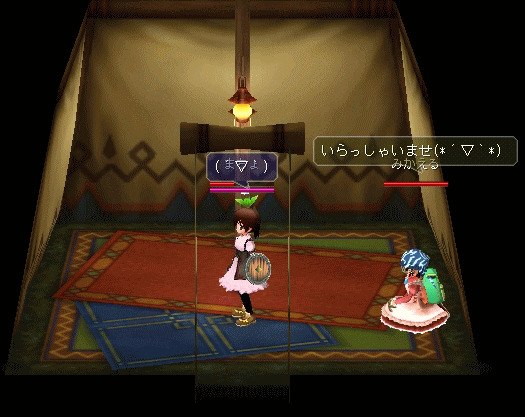

หน้า 4 จากทั้งหมด 34

โพสต์แล้ว:
ศุกร์ 02 มี.ค. 2007 11:46 pmโดย ECO
ดูจากเว็บอ่ะนะครับ
มี STR+AGI
AGI ล้วนๆ
STR+DEX+AGI
โพสต์แล้ว:
เสาร์ 03 มี.ค. 2007 12:49 amโดย ECO
สาย AGI+DEX จาโอ ไหมอ่าเนี้ยคับ :roll:
โพสต์แล้ว:
เสาร์ 03 มี.ค. 2007 11:02 amโดย ECO
โพสต์แล้ว:
เสาร์ 03 มี.ค. 2007 2:48 pmโดย ECO
Ranger หลายคนบอกว่า เน้น STR AGI แต่ พอดู ขั้น2แล้ว ทาง Treasure hunter เน้น VIT กะ AGI แทนแหะ (STR ต่ำสุดในสายBP เท่า MAG)
ส่วน STR AGI จะไปทาง Explorer มากกว่า (แต่ BONUSก็ เน้น DEX AGI อยู่ดี)
โพสต์แล้ว:
เสาร์ 03 มี.ค. 2007 3:24 pmโดย ECO
อยากจะรู้ว่า tent นี้ฟื้นฟูพลังป่าว
ถ้ามันฟื้นฟูแล้วมันแตกต่างกันแค่ไหนอ่ะ
โพสต์แล้ว:
เสาร์ 03 มี.ค. 2007 3:31 pmโดย ECO
ไม่แน่ใจว่า ต่างกับ สุ่มกองไฟแค่ไหน (แต่ Tent ยิ่ง เพิ่มสกิล ยิ่งจุคนได้มาก ) เทียมกับ สุ่มกองไฟ จาเป็น Area 5*5 (ตามผมคิด Tent อาจกีกว่าตรง จุคนได้ทีละมากๆกว่า สุ่มไฟ อนาเขตอาจไม่กว้าง ขนาดให้คนมา ยืนรอบๆได้20คน เพราะเลเวลสูงสุดของ Tent จุได้20คนทีเลเวลสกิล5)
โพสต์แล้ว:
อังคาร 06 มี.ค. 2007 3:33 pmโดย ECO
อยากได้ตาราง Bonus status ของเรนเจอร์อะเอาแต่เวลเลยคับแล้วก้อใครจะเล่นสายไรลองบอกกันบ้างนะคับอยากรู้เป็นแนวทางการเล่นอะคับ :twisted:
ปล.ใครเคยเล่นแล้วช่วยแนะนำหน่อยน้า
โพสต์แล้ว:
ศุกร์ 16 มี.ค. 2007 7:17 pmโดย ECO
ตอนแรกว่าจะเล่นสายปามีด- - แต่ไหงไม่มีสกิลเกี่ยวกับอาวุธแบบปาเลยอ่ะครับ
โพสต์แล้ว:
พุธ 21 มี.ค. 2007 9:33 pmโดย ECO

ภายใน tent เป็นอย่างนี้นั่นเอง
โพสต์แล้ว:
พฤหัสฯ. 22 มี.ค. 2007 12:47 pmโดย ECO
RANGERRRRR
โพสต์แล้ว:
อาทิตย์ 25 มี.ค. 2007 8:20 pmโดย ECO
ขออนุญาติขุดนะงับ จะได้อยุ่หน้าต้นๆ คนที่เล่นอาชีพแบบเราๆ ได้เข้ามาเปลี่ยนความรู้กัน
โพสต์แล้ว:
อาทิตย์ 25 มี.ค. 2007 8:20 pmโดย ECO
ขุดๆ ๆ ๆ ๆ ๆ มีคนช่วยผมขุดมั้ย?
โพสต์แล้ว:
อาทิตย์ 25 มี.ค. 2007 8:22 pmโดย ECO
ขุดๆๆๆๆๆๆๆๆๆๆๆๆๆๆๆๆๆๆๆๆๆๆๆๆๆๆๆๆๆๆๆๆๆๆๆๆๆๆๆๆ
โพสต์แล้ว:
อาทิตย์ 25 มี.ค. 2007 8:23 pmโดย ECO
ผมเวล18 / 16 ละนะงับ สายพริ้วๆๆๆ
โพสต์แล้ว:
อาทิตย์ 25 มี.ค. 2007 8:24 pmโดย ECO
ขอโทษทีที่ปั๊ม พร่ำเพรื่อ*-* :cry: